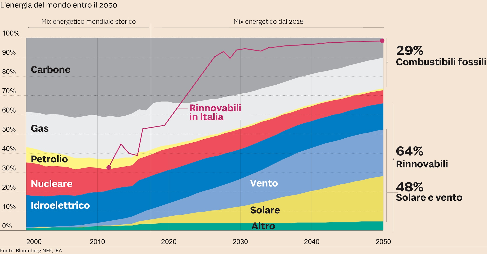

Combustibili Fossili
I combustibili fossili sono risorse naturali non rinnovabili che derivano da materiale organico sepolto nel terreno e sottoposto a pressione e calore per milioni di anni. Questi combustibili sono essenzialmente costituiti da carbonio e idrogeno e includono carbone, petrolio e gas naturale.
- Carbone: Il carbone è una roccia sedimentaria di origine organica composta principalmente da carbonio, idrogeno, ossigeno, azoto e altri elementi. Viene estratto dalle miniere e bruciato per produrre energia elettrica e calore
- Petrolio: Il petrolio è un liquido oleoso naturale di colore scuro che si trova nelle rocce sedimentarie della crosta terrestre. Viene estratto tramite pozzi petroliferi e raffinato per produrre benzina, diesel, cherosene e altri prodotti petroliferi.
- Gas naturale: Il gas naturale è composto principalmente da metano, ma può contenere anche etano, propano, butano e altri idrocarburi. Viene estratto tramite pozzi di gas e utilizzato per riscaldamento, produzione di energia aggiungi alcuni vantaggi e svantaggi e aggiungi qualche statistica che indica quanto sta diminuendo la prevalenza .
Vantaggi
- Elevata densità energetica: I combustibili fossili contengono una grande quantità di energia per unità di volume, rendendoli efficienti per la produzione di energia elettrica e il trasporto.
- Affidabilità: Sono disponibili in grandi quantità e possono essere facilmente trasportati e immagazzinati, garantendo un approvvigionamento affidabile di energia.
- Infrastrutture esistenti: Esistono infrastrutture ben sviluppate per l'estrazione, il trasporto e l'utilizzo dei combustibili fossili, il che facilita la loro utilizzazione.
Svantaggi
- Inquinamento atmosferico: La combustione dei combustibili fossili rilascia sostanze inquinanti nell'aria, come biossido di carbonio (CO2), ossidi di azoto (NOx) e zolfo (SOx), contribuendo al riscaldamento globale e all'inquinamento dell'aria.
- Impatto ambientale: L'estrazione dei combustibili fossili può causare danni agli ecosistemi, come la deforestazione per le miniere di carbone o gli incidenti petroliferi che contaminano gli oceani.
- Dipendenza da fonti non rinnovabili: Essendo risorse non rinnovabili, l'uso dei combustibili fossili porta a una crescente dipendenza da fonti di energia esauribili.
- Rischio di incidenti: L'estrazione e il trasporto dei combustibili fossili comportano rischi per la sicurezza degli operatori e possono causare incidenti ambientali, come le fuoriuscite di petrolio.
Statistiche sulla diminuzione della prevalenza:
Secondo dati recenti, l'uso globale di carbone sta diminuendo, con un calo del consumo in molti paesi industrializzati a causa della crescente adozione di fonti di energia rinnovabile e politiche di riduzione delle emissioni di carbonio. Anche l'uso di petrolio e gas naturale potrebbe essere destinato a diminuire nel lungo periodo, poiché cresce l'attenzione sulle energie rinnovabili e sulle tecnologie a basse emissioni di carbonio per affrontare il cambiamento climatico. Le statistiche mostrano che gli investimenti nelle energie rinnovabili stanno superando quelli nei combustibili fossili in molte parti del mondo, indicando un cambiamento nel panorama energetico globale verso fonti più sostenibili.
Scopri di più
Autori
- Costanza Leone